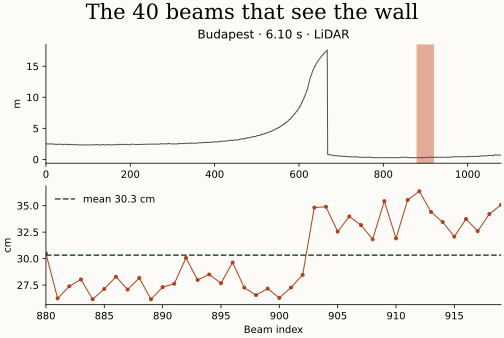

Inside a bad turn
In Budapest the wall is on the car’s left and the network is still asking for full left steering. Astra read the weights of the PPO-trained network, inspected neuron activations in corners and tested edits in simulation. In one of the six documented prompts I restricted it to weight edits. Prompts and protocol
Astra reused two neurons. The first reads 40 left-facing laser beams. The second softens a sharp turn when the wall is close. These three lines program the first neuron. Weight-editing code
w1[15, :] = 0.0
w1[15, 880:920] = -7.5
b1[15] = -292.0



How much changes across 210 starts?
With the weights frozen, the steering repair alone raises completions from 167 to 179 at almost the same pace. Adding 0.2 m/s to the speed command brings that to 180 out of 210. This version changes 1,276 values. It is faster on all 164 laps both networks finish, cutting lap time by 2.01% on average.

A network written from scratch
Could Astra generate an entire network? This time it wrote a program that translates the car’s footprint and equations of motion into 28,427 coefficients. At runtime the network takes a laser scan and evaluates 17 possible curvatures. The first three trials end at the wall. Once Astra accounts for the car’s predicted sideslip, the network finishes all three. Further revisions use simulation feedback without training. From equations to weights

Across 105 new starts, the final network finishes 95 laps, with ten timeouts and zero reported collisions. The previously improved PPO finishes 88, with 17 collisions. On the new network’s 95 completed laps, the car’s footprint clears the occupied map cells at every recorded pose. Its smallest measured clearance is 0.85 cm on the map.


What does this tell us about Astra?
In one session Astra wrote an inspectable steering rule into a trained network and built a second controller from vehicle geometry. The small number of prompts tells us how much direction I supplied. Between requests, Astra wrote code, inspected crashes and discarded unsuccessful designs. How often could it find an equally effective repair if we gave it a different starting network?
The tests cover one lap at a time on 21 known tracks. Ten starts still end in timeouts. Performance on a physical car remains an open question. The protocol includes failed candidates and the follow-up timeout investigation. Full results · Original F1TENTH report with Manuel Andruccioli and Giacomo Totaro (PDF) · Code, weights and data